ЛР1. Работа с сокетами¶
Студент: Блинова Полина Группа: К3339 Вариант: 4 (площадь параллелограмма)
Цель работы¶
Понять принципы межсокетного взаимодействия в вебе. Научиться реализовывать базовую архитектуру клиент-сервер с использованием протоколов UDP, TCP и HTTP.
Задачи¶
- Обмен сообщениями по UDP
- Вычисления через TCP (вариант 4 — площадь параллелограмма)
- Раздача HTML-страницы по HTTP
- Многопользовательский чат на сокетах
- Простой веб-сервер с GET/POST (журнал оценок)
Используемые технологии¶
| Технология | Назначение |
|---|---|
| Python 3.13 | Язык программирования |
| socket | Работа с сетью |
| threading | Многопоточность (чат) |
| json | Передача структурированных данных |
| urllib.parse | Разбор параметров формы |
| collections.defaultdict | Группировка оценок |
Структура проекта¶
lab_1/
├── part_1_udp/
│ ├── udp_server.py
│ └── udp_client.py
├── part_2_tcp/
│ ├── tcp_server.py
│ └── tcp_client.py
├── part_3_http/
│ ├── http_server.py
│ └── index.html
├── part_4_chat/
│ ├── chat_server.py
│ └── chat_client.py
└── part_5_web_server/
├── web_server.py
├── templates/
│ ├── index.html
│ ├── grades.html
│ └── 404.html
└── static/
└── style.css
Задание 1. Обмен сообщениями по UDP¶
Описание протокола¶
UDP (User Datagram Protocol) — протокол без установления соединения. Отправитель просто посылает датаграмму, не дожидаясь подтверждения от получателя.
| Характеристика | UDP |
|---|---|
| Соединение | Не устанавливается |
| Гарантия доставки | Нет |
| Порядок пакетов | Не гарантируется |
| Скорость | Высокая |
| Применение | Видео, игры, DNS, стриминг |
Файлы¶
part_1_udp/udp_server.py— серверpart_1_udp/udp_client.py— клиент
Логика сервера¶
- Создать UDP-сокет через
socket.socket(AF_INET, SOCK_DGRAM) - Привязать к
localhost:12345черезbind() - В бесконечном цикле вызывать
recvfrom(1024)для получения датаграммы - Вывести полученное сообщение в консоль
- Отправить ответ
"Hello, client"черезsendto()на адрес клиента
Логика клиента¶
- Создать UDP-сокет через
socket.socket(AF_INET, SOCK_DGRAM) - Отправить
"Hello, server"черезsendto()на адрес сервера - Дождаться ответа через
recvfrom(1024) - Вывести ответ в консоль
- Закрыть сокет
Пример работы¶
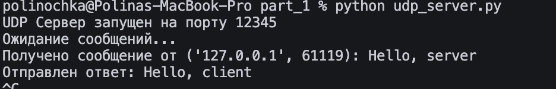
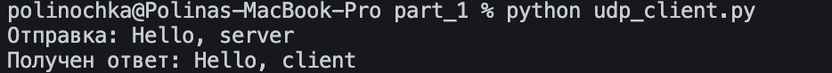
Задание 2. Вычисления через TCP¶
Описание протокола¶
TCP (Transmission Control Protocol) — протокол с установлением соединения. Перед обменом данными клиент и сервер проходят процедуру handshake.
| Характеристика | TCP |
|---|---|
| Соединение | Устанавливается |
| Гарантия доставки | Да |
| Порядок пакетов | Гарантирован |
| Скорость | Ниже, чем у UDP |
| Применение | HTTP, чаты, файлы |
Вариант 4. Площадь параллелограмма¶
Формула: S = a × h
Где:
a— основание параллелограммаh— высота
Файлы¶
part_2_tcp/tcp_server.py— серверpart_2_tcp/tcp_client.py— клиент
Логика сервера¶
- Создать TCP-сокет через
socket.socket(AF_INET, SOCK_STREAM) - Разрешить переиспользование порта через
setsockopt - Привязать к
localhost:12346черезbind() - Начать слушать через
listen(5) - В цикле принимать подключения через
accept() - Для каждого клиента вызвать
handle_client():- Читать JSON-запросы через
recv(1024) - Разобрать через
json.loads() - Извлечь
baseиheight - Вычислить площадь по формуле
base * height - Вернуть JSON с результатом
- Читать JSON-запросы через
- Валидация: если
base <= 0илиheight <= 0— вернуть ошибку
Логика клиента¶
- Создать TCP-сокет
- Подключиться через
connect()к серверу - В цикле запрашивать у пользователя основание и высоту
- Формировать JSON-запрос и отправлять через
send() - Читать ответ через
recv(1024), разбиратьjson.loads() - Выводить результат или ошибку
- Спрашивать продолжение
Пример работы¶
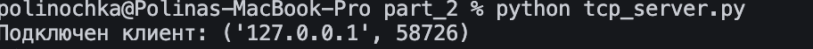
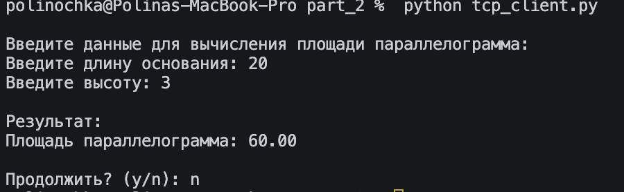
Задание 3. Раздача HTML-страницы по HTTP¶
Описание¶
Сервер отдаёт HTML-страницу, которую читает из файла index.html. Ответ формируется вручную в формате HTTP.
Формат HTTP-ответа¶
HTTP/1.1 200 OK
Content-Type: text/html; charset=utf-8
Content-Length: 1234
Connection: close
<!DOCTYPE html>
...
- Строка статуса — протокол, код, причина
- Заголовки — метаданные ответа
- Пустая строка — разделитель между заголовками и телом
- Тело — сам HTML
Файлы¶
part_3_http/http_server.py— серверpart_3_http/index.html— HTML-страница
Логика сервера¶
- Создать TCP-сокет
- Привязать к
localhost:8080 - Начать слушать
- В цикле принимать подключения
- Для каждого клиента:
- Прочитать файл
index.htmlчерез функциюread_html_file() - Сформировать HTTP-ответ как f-строку:
- статусная строка
HTTP/1.1 200 OK\r\n - заголовки
Content-Type,Content-Length,Connection - пустая строка
\r\n - тело — содержимое HTML-файла
- статусная строка
- Отправить через
sendall() - Закрыть сокет
- Прочитать файл
Логика чтения файла¶
Функция read_html_file(filename):
- Открывает файл в режиме
'r'с кодировкой UTF-8 - Возвращает содержимое как строку
- При
FileNotFoundErrorвозвращает HTML с ошибкой 404
Пример работы¶
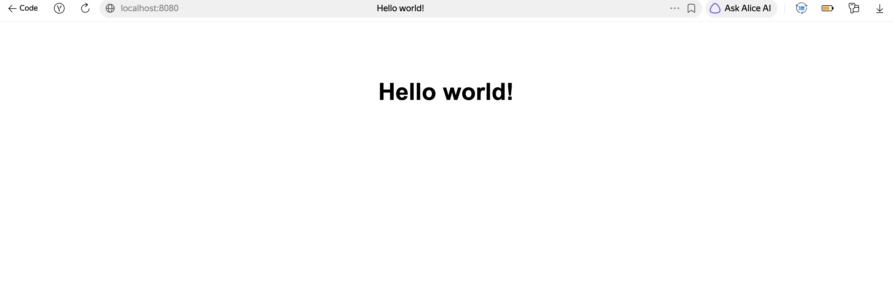
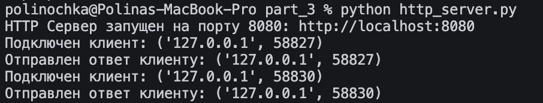
Задание 4. Многопользовательский чат¶
Описание¶
Чат на TCP с поддержкой нескольких пользователей одновременно. Каждый клиент обрабатывается в отдельном потоке.
Ключевые концепции¶
| Концепция | Назначение |
|---|---|
threading.Thread |
Отдельный поток на каждого клиента |
threading.Lock |
Защита общих данных от гонок |
json |
Формат обмена сообщениями |
dict clients |
Хранилище {username: socket} |
Модель данных¶
Архитектура¶
- Каждому подключению — отдельный поток
- Общий словарь
clientsзащищёнLock - Рассылка сообщений: всем, кроме отправителя
- Личные сообщения: только указанному пользователю
- При выходе пользователя все остальные получают уведомление
Файлы¶
part_4_chat/chat_server.py— серверpart_4_chat/chat_client.py— клиент (один для всех пользователей)
Логика сервера (класс ChatServer)¶
__init__— хранитhost,port, словарьclients,Lockstart— запускает сокет, в цикле принимает подключения, для каждого создаётthreading.Threadс функциейhandle_clienthandle_client:- Первым сообщением получает имя пользователя
- Проверяет, занято ли имя (под
Lock) - Добавляет в
clients - Рассылает всем уведомление о присоединении
- В цикле читает сообщения от клиента
- Обрабатывает тип
message(обычное) иprivate(личное) - При отключении удаляет из
clientsи уведомляет остальных
broadcast— рассылает сообщение всем, кроме указанного пользователяsend_private— отправляет сообщение конкретному пользователю
Логика клиента (класс ChatClient)¶
connect— подключается к серверу, отправляет имя, запускает потокreceive_messagesreceive_messages— в отдельном потоке принимает сообщения от сервера, отображает черезdisplay_messagedisplay_message— в зависимости от типа (system,message,private,error) выводит в консольsend_message— обрабатывает команды (/quit,/pm,/users) и обычные сообщения, отправляет JSON на серверrun— главный цикл: читаетinput()и передаёт вsend_message
Команды клиента¶
| Команда | Описание |
|---|---|
/users |
Список пользователей онлайн |
/pm <имя> <сообщение> |
Личное сообщение |
/quit |
Выход из чата |
Пример работы¶
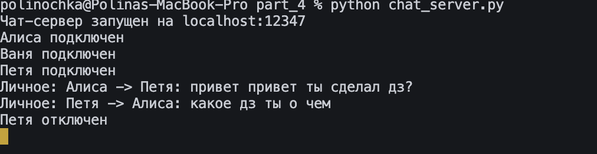
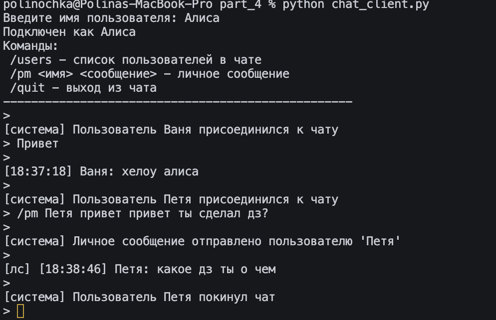
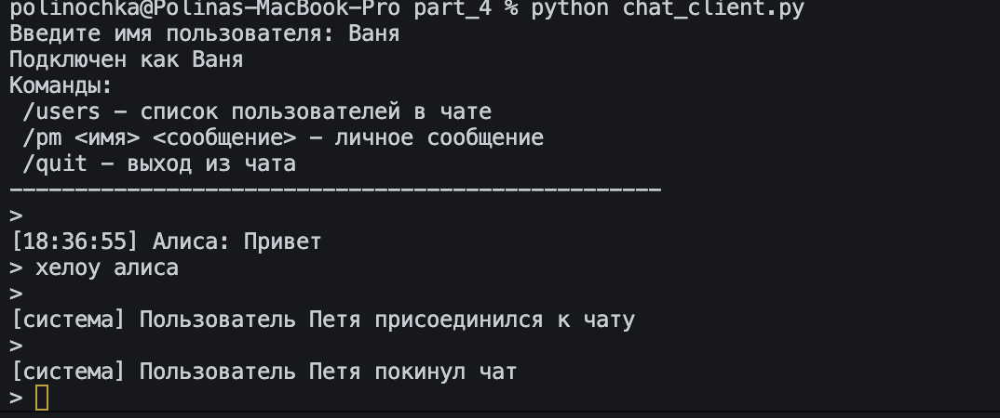
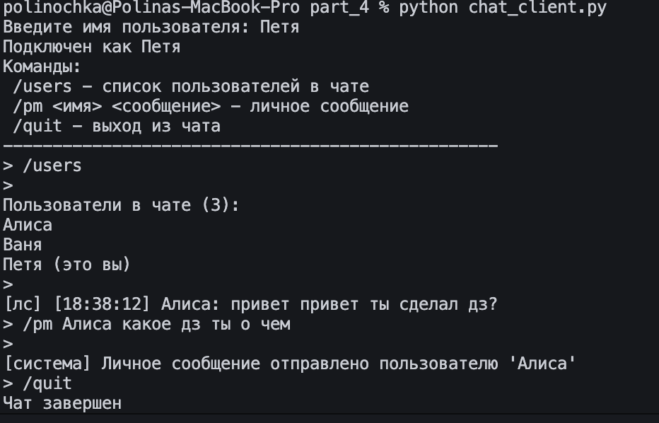
Задание 5. Веб-сервер журнала оценок (GET/POST)¶
Постановка задачи¶
Написать веб-сервер на socket, который:
- Принимает информацию о дисциплине и оценке
- Отдаёт все оценки в виде HTML-страницы
- Группирует оценки по предмету
Модель данных¶
Ключевое требование — группировка по предмету. Значит, структура данных — словарь со списками:
Почему defaultdict(list), а не обычный dict¶
Без defaultdict:
if discipline not in self.grades:
self.grades[discipline] = []
self.grades[discipline].append(grade)
С defaultdict:
Эндпоинты¶
| Метод | URL | Описание |
|---|---|---|
| GET | / |
Главная страница с формой |
| GET | /grades |
Журнал оценок |
| POST | /add_grade |
Добавить оценку |
| GET | /static/style.css |
CSS-файл |
| GET | /favicon.ico |
Иконка сайта |
| любой | остальное | Страница 404 |
Файлы¶
part_5_web_server/web_server.py— серверpart_5_web_server/templates/index.html— главная с формойpart_5_web_server/templates/grades.html— страница журналаpart_5_web_server/templates/404.html— страница ошибкиpart_5_web_server/static/style.css— стили
Структура класса MyHTTPServer¶
| Метод | Назначение |
|---|---|
__init__ |
Хранит host, port, name, grades = defaultdict(list) |
serve_forever |
Запуск сервера, цикл accept() |
serve_client |
Обработка одного клиента |
parse_request |
Разбор первой строки запроса |
parse_headers |
Разбор заголовков |
handle_request |
Маршрутизация по методу и URL |
send_response |
Формирование и отправка ответа |
_load_template |
Чтение HTML-шаблона из templates/ |
_serve_static |
Отдача CSS из static/ |
_handle_root |
GET / — главная с формой |
_handle_add_grade |
POST /add_grade — добавление оценки |
_handle_grades |
GET /grades — журнал с группировкой |
_handle_404 |
Страница 404 |
Как работает сервер¶
1. Запуск¶
serve_forever создаёт TCP-сокет, привязывает к localhost:8081, слушает. В бесконечном цикле accept() принимает клиентов и передаёт в serve_client.
2. Обработка клиента¶
serve_client:
- Создаёт file-like объект через
makefile('rb')— для построчного чтения - Вызывает
parse_request→ получаетmethod,url,params,protocol - Вызывает
parse_headers→ получает словарь заголовков - Вызывает
handle_request→ получает(status, reason, body)или(status, reason, body, content_type) - Вызывает
send_response→ отправляет HTTP-ответ
3. Разбор запроса¶
parse_request:
- Читает первую строку через
readline() - Разбивает по пробелам:
method,url,protocol - Если в URL есть
?— разделяет на путь и query-строку - Разбирает query-строку через
urllib.parse.parse_qs()
4. Разбор заголовков¶
parse_headers:
- Читает строки до пустой
- Каждую разбирает по
': ' - Возвращает словарь
5. Маршрутизация¶
handle_request:
- Если POST — читает тело через
request_file.read(content_length)(длина изContent-Length) - Разбирает тело через
parse_qsи добавляет вparams - Если URL начинается с
/static/— вызывает_serve_static - Если
/favicon.ico— возвращает 204 - Если
GET /—_handle_root - Если
GET /grades—_handle_grades - Если
POST /add_grade—_handle_add_grade - Иначе —
_handle_404
6. Отправка ответа¶
send_response:
- Кодирует тело в байты
- Формирует заголовки: статусная строка,
Content-Type,Content-Length,Connection: close,Server - Отправляет через
sendall()сначала заголовки, потом тело
7. Добавление оценки¶
_handle_add_grade:
- Извлекает
disciplineиgradeизparams - Валидация: не пусто, число, 1–5
- Ключевая строка:
self.grades[discipline].append(grade)— добавляет оценку в список для данной дисциплины - Возвращает главную страницу с сообщением об успехе
8. Формирование журнала¶
_handle_grades:
- Загружает шаблон
grades.html - Если журнал пуст — возвращает сообщение «Пока нет оценок»
- Иначе в цикле
for discipline in sorted(self.grades.keys()):- Получает список оценок для дисциплины
- Считает среднюю и количество
- Формирует HTML-блок
<div class="subject"> - Внутри — название дисциплины, метки оценок, статистика
- Подставляет в шаблон через
str.replace('{{GRADES}}', ...)иstr.replace('{{TOTAL}}', ...) - Возвращает готовый HTML
9. Отдача статики¶
_serve_static:
- Извлекает имя файла из URL
- Защита от path traversal через
os.path.basename - Читает файл в байтах
- Возвращает
(200, "OK", content, 'text/css')
Как работает шаблонизация¶
В HTML-шаблонах есть плейсхолдеры:
{{MESSAGE}}— сообщение об успехе/ошибке{{GRADES}}— HTML-блок с дисциплинами{{TOTAL}}— итоговая статистика
В Python они заменяются через str.replace():
Пример работы¶
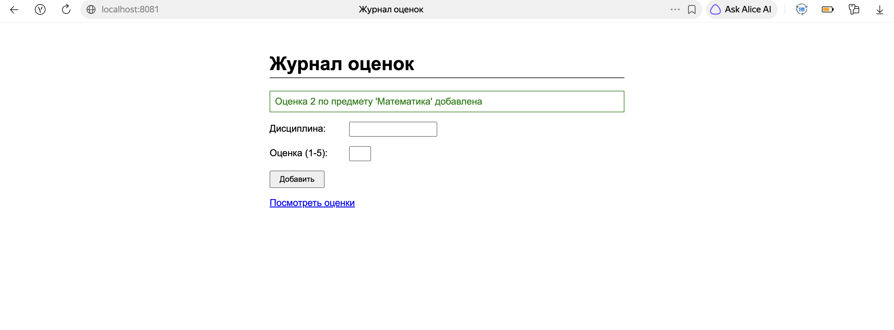
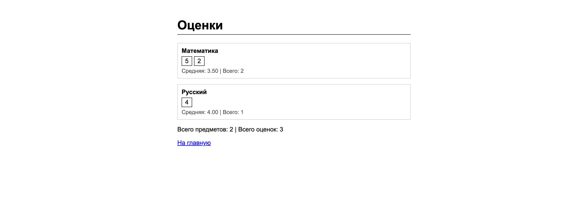
Вывод¶
В ходе работы освоены:
- принципы клиент-серверного взаимодействия
- работа с сокетами UDP и TCP
- формирование HTTP-ответов вручную
- многопоточная обработка клиентов через
threading
Все пять заданий выполнены и протестированы локально.